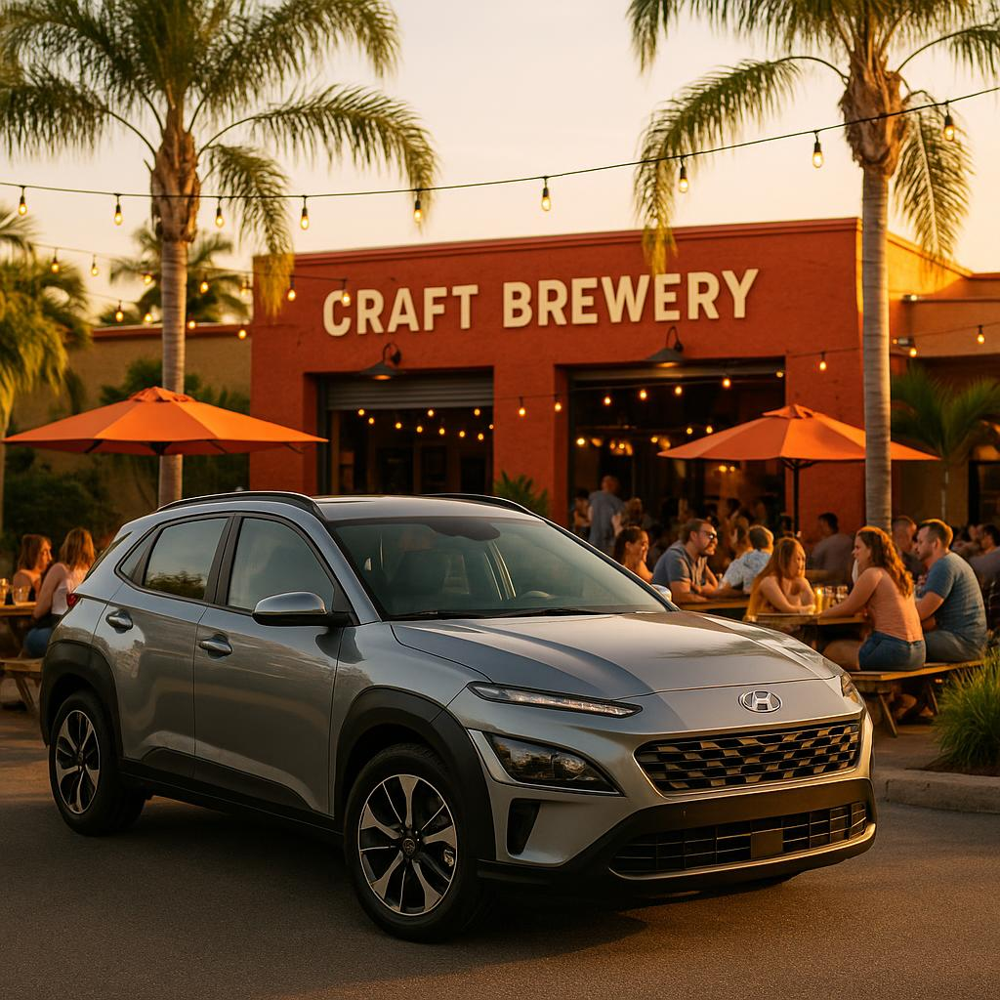

Food & Drink · June 16, 2026

When most people think of Southwest Florida, they picture white-sand beaches and turquoise Gulf water — and rightfully so. But Fort Myers has quietly built one of the most exciting craft beverage scenes in the state. Over the past decade, a wave of independent breweries, taprooms, distilleries, and cocktail lounges has taken root here, fueled by a community of passionate locals and a year-round influx of visitors hungry for something more than a chain-restaurant margarita.
Whether you're a craft-beer connoisseur, a cocktail enthusiast, or simply someone who appreciates a cold, locally made drink after a day in the Florida sun, Fort Myers has a glass (or a flight) with your name on it. Best of all, these spots are spread across distinct neighborhoods, making a self-guided sipping tour a genuinely fun way to see the city. Having your own set of wheels — picked up right at RSW or delivered straight to your accommodation — makes hopping between stops effortless.
Fort Myers' craft beer community is anchored by a handful of standout breweries, each with its own personality.
Many of these breweries host live music, trivia nights, and food truck events on weekends — check their social pages before you go to catch something special.
Not a beer drinker? Fort Myers has you covered with a growing roster of distilleries and wine-focused spots that are every bit as worth your time.
No sipping tour of Fort Myers is complete without an evening in the historic River District, the city's vibrant downtown core running along the Caloosahatchee River. This walkable stretch is packed with cocktail bars, rooftop lounges, and eclectic restaurants that double as excellent places for a craft drink.
Pull up to the River District — parking is easy on evenings and weekends — and wander at your own pace. Spots worth ducking into include rooftop bars with sweeping river views, speakeasy-style cocktail dens tucked into restored historic buildings, and lively outdoor patios where the warm Florida night air makes every sip taste a little better. The vibe is festive but never overwhelming, and you'll find a mix of tourists, snowbirds, and locals sharing the same barstools.
Pro tip: Thursday evenings often feature Art Walk, when the galleries and shops of the River District open their doors late and the streets come alive with live music and street performers — a perfect backdrop for your evening out.
A craft drink tour across multiple stops calls for a little planning to do it safely and comfortably. Here's how to make the most of your day:
Fort Myers' craft drink scene is spread just enough across the city that having your own vehicle is the most comfortable and flexible way to experience it. Flying into RSW or PGD? SafeWheels Rentals SWFL can meet you right at the airport or deliver directly to your hotel or vacation rental — anywhere within 50 miles of the Punta Gorda area. The zippy and fuel-efficient Hyundai Kona is a fantastic companion for a day of neighborhood-hopping: easy to park, comfortable for a small group, and sharp enough to arrive in style.
So raise a glass to Southwest Florida's thriving craft scene. Whether it's a hoppy IPA on a sun-drenched patio, a small-batch bourbon in a cozy tasting room, or a perfectly mixed cocktail overlooking the Caloosahatchee at dusk, Fort Myers is ready to impress. Cheers — and enjoy every sip.